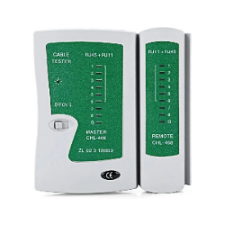

Probador de Cables
Dispositivo utilizado para verificar la continuidad, integridad y correcta configuración de cables de red, telefonía o eléctricos. Permite detectar fallos como cortocircuitos, conexiones abiertas, cables cruzados y otros problemas de cableado, asegurando que los cables funcionen correctamente y cumplan con las especificaciones necesarias para su uso.
